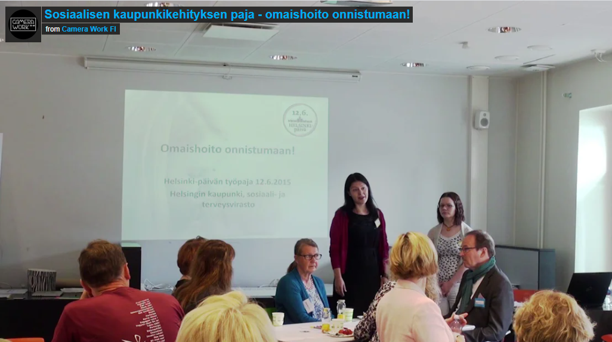

Omaishoito onnistumaan!
Toteutimme työryhmän kanssa omaishoidon kehittämiseen liittyvän palvelumuotoilu-projektin, joka huipentui Helsinki-päivän "Omaishoito onnistumaan" -työpajaan.
Täältä löytyy palvelumuotoiluun ja sosiaalialan kehittämiseen liittyviä projektejani.
Toteutimme työryhmän kanssa omaishoidon kehittämiseen liittyvän palvelumuotoilu-projektin, joka huipentui Helsinki-päivän "Omaishoito onnistumaan" -työpajaan.
Toimin uuden asiakas- ja potilastietojärjestelmän käyttöönotossa työyksikköni
tukihenkilönä ja olen mukana sen kehittämisessä.
Fun fact: Olen teen ystävä!
Olen ollut mukana toteuttamassa kahta sosiaalista raporttia:
Olen mukana koordinoimassa yksikkömme "osallisuus ja syrjäytymisen ehkäisy" -kehittämisryhmää, jossa laadimme osallistuvan budjetoinnin idean "ikääntyneiden osallisuuskyyti -Osku". Idea eteni äänestykseen v.2019 ja on lähdössä uudelle äänestyskierrokselle v.2021 ehdotuksena "Yhtä matkaa -iäkkäiden kuljetuspalvelu".